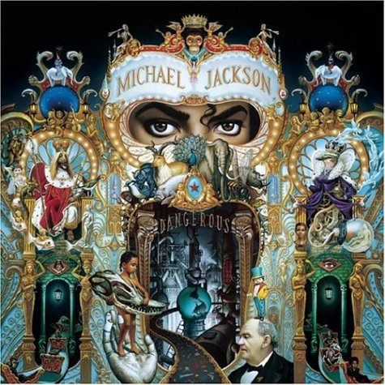

Copilăria și The Jackson 5 (1958—1975)Michael Joseph Jackson s-a născut la 29 august 1958 în orașul Gary, Indiana (o suburbie industrială a orașului Chicago, Illinois) într-o familie de muncitori, fiul lui Joseph "Joe" Walter și Katherine Esther (născută Scruse), el este cel de-al șaptelea din nouă copii. Frații săi sunt Rebbie, Jackie, Tito, Jermaine, La Toya, Marlon, Randy și Janet. Joseph Jackson a fost angajat al unei fabrici locale de oțel și cânta adesea alături de fratele său Luther într-o formație de muzică R&B numită The Falcons. Michael Jackson a fost crescut de către mama sa în conformitatea regulilor impuse de Martorii lui Iehova, iar ulterior au existat zvonuri că s-a convertit la Islam, zvonuri dezmințite de avocatul său. De la o vârstă fragedă Michael a fost abuzat fizic și emoțional de tatăl său fiind nevoit să îndure multe bătăi și înjosiri. Abuzurile din copilărie l-au afectat pe tot parcursul vieții. Marlon Jackson își reamintește cum tatăl său îl ridica pe Michael ținându-l de un picior și „îl snopea în bătaie iar și iar cu mâna, lovindu-l”. Joseph avea probleme frecvent și îi pedepsea pe băieții săi lovindu-i de pereții casei. Într-o noapte, în timp ce Michael dormea, Joseph a intrat în camera sa folosind fereastra deschisă. Purtând o mască înspăimântătoare, Joseph a început să țipe, vrând să își învețe copiii să nu lase fereastra deschisă atunci când se duc la culcare. Mulți ani după acest incident Michael a avut coșmaruri corelate imaginii tatălui său în care era răpit din propriul dormitor. Michael a vorbit deschis despre abuzurile din copilaria sa în anul 1993 într-un interviu acordat moderatoarei Oprah Winfrey. El a spus că în timpul copilăriei sale a plâns de multe ori de singurătate. Într-un interviu ce făcea parte din documentarul Living with Michael Jackson (2003) interpretul și-a acoperit fața cu mâna și a început să plângă atunci când vorbea despre copilăria sa.
Michael Jackson și-a dezvăluit talentul muzical la vârsta de cinci ani în fața colegilor de clasă și a altor persoane în timpul unui recital de Crăciun. În anul 1964, Michael și Marlon s-au alăturat fraților Jackson — un grup muzical format de frații Jackie, Tito și Jermaine — la început fiind muzician de backup. La vârsta de opt ani Michael și Jermaine au devenit cântăreții principali ai formației care a preluat la vremea respectivă numele The Jackson 5. Trupa a concertat pentru câțiva ani în cluburile și locurile cunoscute din Vestul mijlociu precum Chitlin' circuit unde adesea deschideau reprezentațiile de striptease și alte acte pentru adulți. Conduși de Michael, ei au câștigat în 1966 un concurs important cu versiuni ale unor șlagăre marca Motown precum hitul lui James Brown „I Got You (I Feel Good)”.
The Jackson 5 au înregistrat mai multe cântece precum „Big Boy” pentru casa de înregistrări Steeltown în 1967, iar în 1968 au semnat un contract de management cu Motown Records. Revista Rolling Stone l-a descris mai târziu pe tânărul Michael ca „un fenomen” cu „talente muzicale copleșitoare”. De asemenea, editorii revistei au observat faptul că Michael a devenit rapid cântărețul principal al grupului, deși inițial se rezuma doar la dans. Cu toate că Michael „cânta cu vocea pițigăiată a unui copil, el dansa precum un dansator profesionist, iar interpretările sale timpurii semănau cu muzica RnB/Soul molipsitoare a unor personalități precum Sam Cooke, James Brown, Ray Charles și Stevie Wonder”. Formația The Jackson 5 a stabilit un nou record în momentul în care primele patru discuri single lansate („I Want You Back”, „ABC”, „The Love You Save” și „I'll Be There”) au câștigat consecutiv prima poziție în prestigiosul clasament Billboard Hot 100. Pe parcursul primilor ani ai erei The Jackson 5, casa de discuri Motown a spus că Michael ar avea doar nouă ani, cu doi ani mai tânăr decât era în realitate, pentru a-l face să pară mai drăguț și mai accesibil publicului.
Începând cu anul 1972, Michael a lansat un total de patru albume pe plan independent fiind impresariat de casa de discuri Motown, printre ele numărându-se Got to Be There și Ben. Acestea au fost puse ca parte din franciza The Jackson 5 și au produs discuri single de succes precum „Got to Be There”, „Ben” și o preluare a cântecului „Rockin' Robin”, original al lui Bobby Day. Popularitatea și vânzările grupului se aflau la mijlocul anilor 1970 în scădere continuă. Formația a mai înregistrat câteva hituri minore precum „Dancing Machine” sau „I Am Love” înainte de a încheia contractul cu Motown. Un nou contract și Off the Wall (1976—1981)Grupul Jackson 5 a semnat un nou contract de management cu CBS Records în iunie 1975 alăturându-se grupului Philadelphia International Records, actuala companie Epic Records. Ca rezultat al unor proceduri legale, grupul a preluat numele The Jacksons. După ce această schimbare a avut loc, formația a continuat să concerteze la nivel internațional lansând încă șase albume de studio între 1976 și 1984. La perioada respectivă Michael Jackson a fost compozitorul principal al grupului scriind șlagăre precum „Shake Your Body (Down to the Ground)”, „This Place Hotel” și „Can You Feel It”.
În 1978 Michael a jucat rolul Sperietoarei în musicalul The Wiz. Piesele muzicale au fost orchestrate și aranjate de Quincy Jones care a format un parteneriat cu Michael Jackson în timpul filmărilor și a fost de acord să îi producă următorul album independent al interpretului, intitulat Off the Wall. În 1979 Michael și-a fracturat nasul în timp ce repeta o coregrafie complexă. Operația de rinoplastie ulterioară nu a fost o reușită, Michael având dificultăți respiratorii, fapt care i-a afectat cariera. Interpretul a fost îndrumat la Dr. Steven Hoefflin care i-a făcut cea de-a doua rinoplastie, dar și alte operații de înfrumusețare. Jones și Michael au produs împreună discul Off The Wall, printre compozitorii și textierii participanți numărându-se solistul formației Heatwave, Rod Temperton, Stevie Wonder și Paul McCartney. Lansat în 1979, „Off The Wall” a fost primul album al interpretului care a generat patru șlagăre de top 10 în S.U.A., inclusiv hiturile „Don't Stop 'Til You Get Enough” și „Rock With You”. Discul „Off The Wall” a câștigat poziția a treia în clasamentul Billboard 200 primind multiple discuri de platină în S.U.A. pentru vânzări de peste șapte milioane de exemplare, la nivel mondial fiind vândute peste 20 de milioane de unități.
În 1980, Michael Jackson a câștigat trei premii la gala American Music Awards pentru eforturile depuse în cariera sa independentă primind titluri pentru „Cel mai popular album de muzică Soul/R&B”, „Cel mai popular interpret de muzică Soul/R&B” și „Cel mai bun disc single de muzică Soul/R&B” (pentru „Don't Stop 'Til You Get Enough”). În același an Michael a câștigat două premii oferite de Billboard Music Awards la categoriile „Cel mai bun interpret de culoare” și „Cel mai bun album al unui interpret de culoare”, dar și un premiu Grammy pentru „Cea mai bună interpretare R&B a unui cântăreț” (pentru „Don't Stop 'Til You Get Enough”). În ciuda succesului său comercial, Michael a simțit că discul „Off The Wall” ar fi trebuit să aibă un impact mult mai mare și a fost determinat să întreacă așteptările tuturor odată cu lansarea viitorului său album de studio. La începutul anilor 1980 Michael a obținut cel mai mare profit din industria muzicală, el primind 37% din banii obținuți în urma comercializării materialelor sale discografice. Thriller și Motown 25 (1982-1983)În 1982, Jackson a contribuit la melodia „Someone In The Dark” din filmul E.T.-Extraterestrul obținând un premiu Grammy pentru "Cel mai bun album pentru copii". În același an Jackson își lansează cel de-al doilea album Epic, Thriller, care devine cel mai vândut album din toate timpurile. Albumul a rămas în top 10 Billboard 200 timp de 80 de săptămâni consecutive, în 37 dintre acestea clasându-se pe prima poziție. A fost primul album care a avut șapte single-uri în top 10 Billboard Hot 100 incluzând „Billie Jean”, „Beat It”, „Wanna Be Startin' Somethin'”. Thriller a primit statutul Double Diamond în Statele Unite acordat de către RIAA pentru cele 28 de milioane de unități vândute până atunci. În prezent, Thriller, este cel mai bine vândut album al tuturor timpurilor cu 110 milioane de copii vândute în întreaga lume. Reprezentantul lui Jackson, John Branca, preciza că în acel moment Jackson avea cea mai ridicată rată a drepturilor de autor din industria muzicală, aproximativ 2$ pentru fiecare album vândut. De asemenea, obținea încasări record din vânzarea CD-urilor și „The Making of Michael Jackson's Thriller”, documentar produs de Jackson și John Landis. Fondat de MTV, documentarul s-a vândut în peste 350.000 de copii în doar câteva luni de la lansare.
The New York Times scria că „în lumea muzicii pop, există Michael Jackson și toți ceilalți”. În 25 martie 1983 Michael Jackson a apărut la un show special televizat, Motown 25: Yesterday, Today, Forever în care a cântat atât alături de cei din formația The Jackson 5, cât și singur. Pe durata melodiei Billie Jean Jackson execută pentru prima dată în public moonwalk, mișcare care avea să devină celebră. Prestația lui a fost urmărită de 47 de milioane de telespectatori fiind comparată cu apariția lui Elvis Presley și a celor de la The Beatles în The Ed Sullivan Show. Pepsi, We Are the World și afacerile (1984-1985)În 27 ianuarie 1984, Jackson a suferit un accident de sănătate. În timp ce filma la o reclamă pentru Pepsi Cola supravegheată de directorul Philip Dusenberry la Shrine Auditorium din Los Angeles, Jackson a suferit arsuri de gradul doi pe cap în urma efectelor pirotehnice din cauza cărora i-a luat foc părul. Acest eveniment s-a petrecut în fața unei mulțimi de fani care participau la simularea unui concert. Imediat după acest accident Jackson a făcut a treia operație de chirurgie plastică și a urmat un tratament pentru a-și ascunde cicatricile cauzate de acest eveniment. Cele 1,5 milioane de $ pe care Jackson i-a primit despăgubire de la Pepsi i-a donat la Brotman Medical Center din Culver City, California, care a deschis o nouă secție: „Centrul de arsuri Michael Jackson”. În 14 mai 1984 a fost invitat la Casa Albă și premiat de către președintele Ronald Reagan pentru acțiunile lui de caritate care au ajutat oamenii să combată alcoolul și consumul de droguri. Jackson a câștigat 8 premii Grammy în acel an. Spre deosebire de succesoarele lui, albumul Thriller nu a avut un turneu oficial de promovare, dar Victory Tour din 1984 a arătat celor 2 milioane de americani care au participat la turneu majoritatea single-urilor lui Michael Jackson. El a donat cele 5 milioane de dolari câștigate în urma turneului. Deasemenea a compus în 1985 împreună cu Lionel Richie „We Are the World”, o melodie de caritate lansată în întreaga lume pentru a combate sărăcia din Africa. A devenit unul dintre cele mai vândute single-uri din toate timpurile cu aproape 20 milioane de copii vândute și milioane de dolari donați pentru a combate foametea.În timp ce lucra la single-urile „The Girl Is Mine” (1982) și „Say Say Say” (1983) împreună cu Paul McCartney, aceștia au devenit prieteni. McCartney i-a spus lui Jackson despre mulțimea de bani care îi câștiga din posesia cataloagelor de muzică. Câștiga aproximativ 40 de milioane de dolari pe an din melodiile altor cântăreți. Prin urmare Jackson a început să cumpere, să vândă și să distribuie drepturile de publicare a melodiilor a numeroși artiști. Schimbarea înfățișării, Bad, autobiografie și Neverland (1986-1990)Pielea lui Jackson a fost maronie pe toată durata tinereții, dar începând cu anii '80 a devenit din ce în ce mai deschisă la culoare. Schimbarea a dat naștere unor zvonuri care pretindeau că și-ar fi decolorat pielea.Conform biografiei lui J.Randy Taraborrelli din 1986, Jackson suferea de vitiligo și lupus, ambele boli făcându-l sensibil la lumina soarelui. Tratamentul pe care l-a urmat și machiajul folosit pentru a-i masca petele decolorate l-au făcut din ce în ce mai palid. Structura feței s-a schimbat de asemenea. Au apărut speculații cum că a efectuat o serie de operații estetice la nas, bărbie și buze. La începutul anilor '80 a pierdut din greutate din cauza unei diete și dorinței de a avea un „corp de dansator”. Martorii spuneau că suferă de anorexie. În 1986 a suferit a patra operație la nas și una la bărbie. Michael Jackson a devenit subiectul unor dezvăluiri senzaționale. În 1986 The National Enquirer a publicat o serie de fotografii cu Jackson într-o camera hiperbarică susținând că dormea în cameră pentru a încetini procesul de îmbătrânire. De fapt acea camera hiperbarică a fost donată de către Michael spitalului unde a fost internat după accidentul de la reclama PEPSI. Când Jackson a cumpărat un cimpanzeu pe nume Bubbles de la un laborator, a fost raportat ca fiind un exemplu de „desprindere față de realitate”. Toate aceste evenimente i-au adus și porecla „Wacko Jacko”. Jackson a jucat în filmul 3D Captain EO, regizat de Francis Ford Coppola. A fost cel mai scump film produs pe minut și a fost difuzat la parcurile Disney. Întreaga lume era în așteptarea unui nou mare hit. Deși nu a avut vânzările lui Thriller, albumul Bad lansat în 1987 a fost un adevărat succes comercial, 5 ("I Just Can't Stop Loving You", "Bad", "The Way You Make Me Feel", "Man in the Mirror" și "Dirty Diana") din cele șapte single-uri clasându-se pe primul loc în Billboard Hot 100, cel mai bun album în această privință. Până în anul 2008 albumul s-a vândut în 30 de milioane de copii în întreaga lume. Turneul mondial Bad a început în 12 septembrie 1987 și s-a încheiat în 14 ianuarie 1989. Numai în Japonia turneul a avut 14 spectacole atrăgând 570.000 de oameni, aproape triplând vechiul record de 200.000 spectatori într-un singur turneu. A doborât un record în Guinness Book când 504.000 oamenii au asistat la cele 7 spectacole de pe stadionul Wembley. Turneul a avut în total 123 de concerte și o audiența de 4,4 milioane de spectatori, încasările fiind situate în jurul a 125 de milioane de dolari. Pe timpul turneului Jackson a invitat copii fără posibilități să-i urmărească concertele gratis și a făcut donații spitalelor și orfelinatelor. În 1988, Jackson a lansat prima lui autobiografie, Moon Walk, care a fost scrisă în patru ani. Cartea s-a vândut în 200.000 de exemplare. Jackson a scris despre copilăria lui, despre Jackson 5 și despre abuzurile suferite. De asemenea, a mai vorbit și despre operațiile estetice suferite menționând că a făcut doar două operații la nas. Moon Walk a ajuns pe prima poziție în topul New York Times al celor mai vândute cărți. Tot în acel an Jackson apare în filmul Moonwalker alături de Joe Pesci. Filmul rămâne în top timp de 22 de săptămâni fiind detronat de Michael Jackosn: The Legend Continues. În martie 1988, Jackson a cumpărat un teren de 11 km2 în apropiere de Santa Ynez, California. Acolo a construit domeniul Neverland la costul a 17 milioane de dolari. Au fost construite caruseluri, o grădină zoologică și un cinema. În 2003 ferma Neverland a fost evaluată la 100 de milioane de dolari. În 1989 veniturile lui Jackson din vânzarea de albume, concerte și afaceri au fost de 125 de milioane de dolari. La scurt timp a devenit primul străin care apare într-o reclamă televizata din Uniunea Sovietică Succesul de proporții a lui Jackson i-a adus și supranumele de „regele muzicii pop”. Acest titlu a fost popularizat de Elizabeth Taylor la înmânarea premiului „Artistul Deceniului” în 1989, proclamându-l „adevăratul rege al muzicii pop, rock și soul”. De asemenea, președintele George H. W. Bush i-a acordat premiul „Artistul Deceniului”. Din 1985 până în 1990, Jackson a donat 500.000 de dolari pentru United Negro College Fund, iar toate profiturile single-ului „Man in the Mirror” au fost donate în scopuri caritabile. Jackson a fost nominalizat la premiile Emmy pentru prestația din timpul celebrării lui Sammy Davis Jr., pentru piesa „You Were There”. Dangerous, Fundația Heal the World și Super Bowl XXVII (1991–1993)În martie 1991, Jackson a reînnoit contractul cu Sony Music pentru 65 de milioane de dolari, o sumă-record la acea vreme,  surclasându-l astfel pe Neil Diamond ce și-a prelungit contractul cu Columbia Records. A lansat cel de-al optulea album (Dangerous) în același an. Până în 2008, materialul discografic s-a comercializat în peste șapte milioane de exemplare în Statele Unite și în peste 12 milioane la nivel mondial; este cel mai bine vândut album în stilul new jack swing al tuturor timpurilor. În țara sa natală, primul single a beneficiat de cel mai mare succes comercial. „Black or White” a ajuns pe primul loc în Billboard Hot 100, staționând pe această poziție timp de șapte săptămâni. Piesa a avut clasări similare și în restul lumii. Al doilea cântec promovat, „Remember the Time”, a urcat până pe locul trei în clasamentul american fiind prezent în primele cinci poziții timp de opt ediții. Jackson a interpretat acest cântec la gala de decernare a premiilor Soul Train Awards într-un scaun, declarând că a suferit o rană în timpul repetițiilor. „Heal the World” a reprezentat cel mai mare șlagăr al materialului discografic în Regatul Unit înregistrând vânzări de peste 450.000 de exemplare și clasându-se timp de cinci săptămâni pe locul secund în UK Singles Chart în 1992.
Jackson a înființat fundația Heal the World în 1992. Fundația organiza numeroase acțiuni de caritate, copii săraci erau aduși în parcul de distracție construit de Jackson la Neverland pentru a se bucura de nenumăratele distracții oferite de parc. Fundația a trimis de asemenea milioane de dolari în întreaga lume pentru a ajuta copiii afectați de război și boli. Turneul mondial Dangerous World Tour a început în 27 iunie 1992 și s-a terminat în 11 noiembrie 1993. Jackson a susținut 67 de concerte, în fața a 3,5 milioane de oameni. Toate profiturile au fost donate către fundația Heal the World. Drepturile de difuzare a turneului Dangerous au fost cumpărate de HBO pentru suma de 20 de milioane de dolari, record care nu a fost doborât nici astăzi. Odată cu moartea lui Ryan White, Jackson a atras atenția publicului asupra virusului HIV/SIDA, un subiect controversat în acea perioadă. El a pledat public pentru acordarea de extra-fonduri, pentru cercetarea și combaterea virusului HIV/SIDA. În timpul unei călătorii în Africa, Jackson a vizitat mai multe țări printre care Gabon și Egipt. La prima oprire în Gabon a fost întâmpinat de 100.000 de oameni, unii dintre ei purtând pancarte pe care scria „Bun venit acasă, Michael”. La prima lui vizită în Coasta de Fildes, Jackson a fost încoronat "Regele Sani" de către un șef tribal.
Printre cele mai aclamate prestații ale lui Michael se numără și spectacolul Super Bowl XXVII. Unul dintre cele mai spectaculoase momente a fost catapultarea lui Jackson pe scenă dintr-o ploaie de artificii. Purtând o costumație militară și ochelari de soare, Jackson a aterizat pe scenă rămânând nemișcat timp de câteva minute în fața mulțimii extaziate. După aceasta și-a scos încet ochelarii, i-a aruncat și a început să cânte și să danseze. Spectacolul a fost compus din 4 melodii: „Jam”, „Billie Jean”, „Black or White” si „Heal the World”. Show-ul de la Super Bowl a fost urmărit de 135 de milioane de americani. Albumul Dangerous a urcat 90 de poziți în top. Jackson a primit premiul "Living Legend Award" la cea de-a 35-ea Gală a Premiilor Grammy din Los Angeles. „Black or White” a fost nominalizat pentru cea mai bună prestație vocală. „Jam” a câștigat două nominalizări: cea mai bună prestație vocală R&B și cea mai bună melodie R&B. Prima acuzație de abuz sexual, prima căsătorie și HIStory (1993–1997)În februarie 1993, Michael a dat primul lui interviu TV după o pauză de 14 ani, într-o emisiune de 90 de minute a celebrei Oprah Winfrey. Vizionată de 90 de milioane de americani, s-a clasat pe locul patru în topul audienței din istoria televiziunii americane (cu excepția transmisiilor sportive). Printre subiectele abordate s-a numărat relația cu tatăl său și rolul acestuia în copilăria lui. Michael a mărturisit că plângea adesea de singurătate și a negat zvonurile pe care le publicau tabloidele, de pildă că achiziționase osemintele „omului-elefant” Joseph Merrick sau că dormea într-o cameră hiperbarică. A respins de asemenea zvonul că și-ar fi albit tenul și a vorbit despre boala lui de piele, vitiligo. A recunoscut că își făcuse operații plastice la nas, dar a adăugat că se oprise acolo. În vara anului 1993, Jackson a fost acuzat de molestare sexuală de către un copil de 13 ani pe nume Jordan Chandler și tatăl său, Evan Chandler, un dentist. Poliția a descins la Neverland, ba chiar a fotografiat organele genitale ale lui Michael, însă n-a fost depusă nici o plângere penală. „Sunt complet nevinovat, n-am greșit cu nimic”, a fost răspunsul lui, transmis prin satelit de la Neverland. În ianuarie 1994 s-a zvonit că plătise familiei Chandler milioane de dolari pentru a scăpa de proces și mulți și-au închipuit că era vinovat. Michael va afirma răspicat prin intermediul biografului său J. Randy Taraborrelli, că a plătit „pentru că trebuia să-mi văd de viața mea. Povestea asta mă ucidea... Îți jur, n-am făcut-o. Voiam doar să las totul în urmă”.
În 26 mai 1994, Jackson se căsătorește cu cântăreața și compozitoarea Lisa Marie Presley, fiica lui Elvis Presley. O cunoștea pe Lisa Marie încă din 1975, dar relația lor a început abia după ce s-au întâlnit din nou în noiembrie 1992. Unii au spus că nu era decât o găselniță de marketing pentru a distrage atenția de la scandalul Chandler, dar faptul că Michael și Lisa Marie s-au căsătorit departe de ochii lumii (în republica Dominicană) și au păstrat două luni secretul, în ciuda vigilenței ziariștilor, infirmă această teorie. Jackson și Lisa Marie au divorțat la nici 2 ani după, dar au rămas buni prieteni. Penultimul album al lui Michael din anii '90 a fost inițial plănuit ca o culegere de hituri mai vechi, însă pe măsură ce aduna materialul a devenit limpede că avea destule piese pentru un dublu CD care să împletească vechiul cu noul. Pe discul 2, Michael apare pentru prima dată și în calitate de instrumentist (keyboards, sintetizator, tobe, chitară și percuție), iar 12 din cele 15 piese noi sunt compuse de el. Intitulat sugestiv HIStory: Past, Present And Future - Book 1, albumul a apărut în iunie 1995 și a debutat pe locul 1 în topul american - o realizare notabilă fiind destul de scump. Totuși a rămas acolo doar două săptămâni, cea mai scurtă perioadă în comparație cu celelalte albume ale sale care au ocupat aceeași poziție. În ciuda acestui fapt, Michael scria întotdeauna istoria, așa s-a dovedit când „You Are Not Alone” a devenit primul single care a intrat în Billboard Hot 100 direct pe locul 1, în septembrie 1995. Predecesorul lui, „Scream” (o piesă violentă în care a cântat alături de sora lui, Janet), se oprise în iunie pe locul 5, iar următoarele single-uri au fost „Earth Song” și „Stranger In Moscow”. Albumul a fost promovat printr-un turneu mondial cu 87 de concerte, din septembrie 1996 până în octombrie 1997. Acesta a fost ultimul turneu a lui Michael Jackson. A doua căsătorie, primii copii și Blood on the Dance Floor: HIStory in the Mix (1996-1999)
În timpul turneului HIStory World Tour, Jackson s-a căsătorit cu asistenta-dermatolog Deborah Jeanne Rowe pe data de 14 noiembrie 1996, ceremonia având loc în apropierea hotelului la care era cazat Michael în Sydney. Debbie Rowe i-a dăruit doi copii: Prince Michael și Paris Michael Katherine. Cei doi s-au întâlnit prima dată la mijlocul anilor '80, când Michael a fost diagnosticat cu vitiligo. De atunci, Debbie s-a îngrijit de sănătatea lui Michael și i-a oferit sprijin emoțional, care a dus la o poveste de dragoste. Căsătoria lor a rezistat mai puțin de trei ani și s-a încheiat cu un divorț în 1999. Cu acordul lui Debbie cei doi copii au intrat în custodia lui Michael. În 1997, Jackson a lansat albumul Blood on the Dance Floor: HIStory in the Mix care conține remixuri din albumul HIStory și cinci melodii noi. Vânzăriile albumului au ajuns la 6 milioane de copii până în 2007 devenind cel mai bine vândut album-remix. A ajuns pe prima poziție în Marea Britanie, la fel și melodia cu același nume, Blood on the Dance Floor. În Statele Unite albumul a fost certificat cu Platină, dar a ajuns doar pe poziția 24. Potrivit Forbes, venitul lui Jackson în 1996 a fost de 35 de milioane de dolari și de 20 de milioane de dolari în 1997. Până în iunie 1999, Jackson era implicat în numeroase acțiuni de caritate. El i s-a alăturat lui Luciano Pavarotti într-un concert de binefacere în Modena, Italia. În urma acestui show s-au strâns milioane de dolari pentru refugiații din Kosovo, cât și pentru copiii din Guatemala. La sfârșitul acelei luni Jackson a organizat o serie de concerte caritabile „Michael Jackson & Friends”, în Germania și Korea. Printre artiștii implicați în acele concerte se numără Slash, The Scorpions, Boyz II Men, Luther Vandross, Mariah Carey, A. R. Rahman, Prabhu Deva Sundaram, Shobana Chandrakumar, Andrea Bocelli și Luciano Pavarotti. Profiturile s-au îndreptat către „Nelson Mandela Children's Fund”, Crucea Roșie și UNESCO. DecesulÎn după-amiaza zilei de 25 iunie 2009, Michael Jackson a suferit un stop cardiac la casa închiriată din Holmby Hills, Los Angeles. A fost găsit cu pulsul scăzut de către medicul personal, însă încercarea de a-l resuscita a eșuat. Echipa de paramedici a primit un apel la 911 la ora 12:22 p.m. (ora locală), ajungând la fața locului după trei minute și șaptesprezece secunde. A fost raportat că acesta nu respira și au fost făcute manevre de resuscitare cardiopulmonară la fața locului, apoi au dus pacientul care intrase în comă la Centrul Medical UCLA. Decesul a fost declarat în jurul orei 14:26 (ora locală) în aceeași zi. Autoritățile au programat o autopsie, presa făcând multe speculații în legătură cu cauza morții. Funeraliile au avut loc pe 7 iulie 2009 în Los Angeles, familia lui participând la o ceremonie privată organizată în cimitirul Forest Lawn, iar la Staples Center a avut loc omagiul public. Sicriul a fost prezent în acest loc pe tot parcursul ceremoniei ce a fost urmărită de peste 2.5 miliarde de oameni din întreaga lume, însă nu se cunoaște încă locul exact al înmormântării. |


 În 1985 ATV Music, o companie care deținea mii de drepturi de publicare incluzând catalogul Northern Songs, care conținea majoritatea compozițiilor lui Lennon-McCartney înregistrate de The Beatles, era scoasă la vânzare. Jackson era foarte interesat s-o cumpere, deși a fost atenționat că avea să înfrunte o competiție dură. Entuziasmat spunea „Nu-mi pasă. Vreau acele melodii. Adu-mi acele melodii Branca (reprezentatul lui)". Branca l-a contactat pe reprezentantul lui McCartney care i-a spus că clientul lui nu era interesat de ATV Music: „E prea scump”. După ce Jackson a început negocierile, McCartney s-a răzgândit și a încercat s-o atragă pe Yoko Ono în afacere cu el, dar ea a refuzat, iar el s-a retras. În cele din urmă Jackson i-a învins pe ceilalți competitori în negocieri care au durat 10 luni, cumpărând catalogul pentru suma de 47,5 milioane de dolari.
În 1985 ATV Music, o companie care deținea mii de drepturi de publicare incluzând catalogul Northern Songs, care conținea majoritatea compozițiilor lui Lennon-McCartney înregistrate de The Beatles, era scoasă la vânzare. Jackson era foarte interesat s-o cumpere, deși a fost atenționat că avea să înfrunte o competiție dură. Entuziasmat spunea „Nu-mi pasă. Vreau acele melodii. Adu-mi acele melodii Branca (reprezentatul lui)". Branca l-a contactat pe reprezentantul lui McCartney care i-a spus că clientul lui nu era interesat de ATV Music: „E prea scump”. După ce Jackson a început negocierile, McCartney s-a răzgândit și a încercat s-o atragă pe Yoko Ono în afacere cu el, dar ea a refuzat, iar el s-a retras. În cele din urmă Jackson i-a învins pe ceilalți competitori în negocieri care au durat 10 luni, cumpărând catalogul pentru suma de 47,5 milioane de dolari.